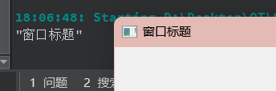
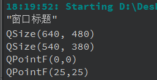

[9] QWidget类¶
QWidget 是 Qt 中的一个基础类，用于表示用户界面的可视化窗口或部件。它是所有可视化窗口、部件和控件的基类，是构建 Qt 用户界面的核心之一。QWidget 提供了一些基本的属性和方法，使得创建和管理用户界面变得更加容易，本文记录该类的一些常用方法。
1. 窗口属性¶
1.1 窗口标题¶
-
QString windowTitle() const：获取窗口标题。 -
void setWindowTitle(const QString &title)：设置窗口标题。

1.2 窗口位置和大小¶
-
QPoint pos() const：获取窗口左上角的坐标。 -
QSize size() const：获取窗口的大小。 -
int width() const：获取窗口的宽度。 -
int height() const：获取窗口的高度。 -
void move(const QPoint &point)：将窗口移动到指定坐标。 -
void resize(const QSize &size)：设置窗口的大小。 -
void setGeometry(int x, int y, int width, int height)：设置窗口的位置和大小。
//获取窗口大小
QSize windowsize;
windowsize = size();
qDebug() << windowsize;
//重新设置窗口大小（高度宽度均减100）
windowsize.setHeight(windowsize.height() - 100);
windowsize.setWidth(windowsize.width() - 100);
qDebug() << windowsize;
this->resize(windowsize);
//获取窗口的左上角坐标
QPoint windowpoint = this->pos();
qDebug() << windowpoint.toPointF();
//重新设置窗口位置
this->move(windowpoint.x() + 25,windowpoint.y() + 25);
qDebug() << this->pos().toPointF();

介绍上面出现的
QSize 和QPoint
QSize 和 QPoint 都是 Qt 中用于处理尺寸和坐标的类，它们常常用于图形界面的开发和布局管理。
-
QSize：
-
QSize 用于表示二维对象的尺寸，通常用来表示宽度和高度。 - 构造函数：
QSize(int width, int height)，通过指定宽度和高度创建一个QSize 对象。 -
常用方法：
-
int width() const：获取尺寸的宽度。 -
int height() const：获取尺寸的高度。 -
bool isEmpty() const：检查尺寸是否为空（宽度或高度为零）。 -
void setWidth(int width) 和void setHeight(int height)：设置宽度和高度。 -
bool isValid() const：检查尺寸是否有效（宽度和高度都大于等于零）。 -
QSize 对象通常用于指定部件或窗口的大小。
-
-
QPoint：
-
QPoint 用于表示二维平面上的坐标，通常用来表示 x 和 y 坐标。 - 构造函数：
QPoint(int x, int y)，通过指定 x 和 y 坐标创建一个QPoint 对象。 -
常用方法：
-
int x() const：获取 x 坐标。 -
int y() const：获取 y 坐标。 -
void setX(int x) 和void setY(int y)：设置 x 和 y 坐标。 -
bool isNull() const：检查坐标是否为零（x 和 y 坐标都为零）。 -
QPoint 对象通常用于指定部件或图形对象的位置。
-
1.3 窗口可见性和窗口状态¶
-
bool isVisible() const：检查窗口是否可见。 -
void setVisible(bool visible)：设置窗口的可见性。 -
Qt::WindowStates windowState() const：获取窗口的状态，如最大化、最小化等。 -
void setWindowState(Qt::WindowStates state)：设置窗口的状态。 -
show()：显示窗口 -
hide()：隐藏窗口 -
close(): 关闭窗口
1.4 窗口最小化和最大化¶
-
void showMinimized()：最小化窗口。 -
void showMaximized()：最大化窗口。 -
void showFullScreen()：全屏显示窗口。 -
void showNormal()：恢复正常窗口大小和位置。
1.5 设置窗口的最大尺寸和最小尺寸¶
-
设置最小尺寸：
-
void setMinimumSize(int minw, int minh)：设置窗口的最小宽度和最小高度。 -
void setMinimumSize(const QSize &size)：设置窗口的最小尺寸为指定的QSize 对象。 -
设置最大尺寸：
-
void setMaximumSize(int maxw, int maxh)：设置窗口的最大宽度和最大高度。 -
void setMaximumSize(const QSize &size)：设置窗口的最大尺寸为指定的QSize 对象。
-
2. 绘制和渲染¶
QWidget 的绘制和渲染是指如何将图形元素或自定义图形绘制到窗口上，以实现自定义绘制效果。在 Qt 中，你可以通过以下方法来进行窗口的绘制和渲染：
2.1 重写 paintEvent ** 函数**：¶
- 你可以在自定义的
QWidget 子类中重写paintEvent 函数，然后在该函数内进行绘制操作。 -
paintEvent 函数会在窗口需要重新绘制时自动调用，如窗口首次显示、窗口被遮挡后再次显示、窗口大小改变等情况。 - 在
paintEvent 函数中，你可以使用QPainter 对象来进行绘制操作，包括绘制图形、文本、图像等。
void MyWidget::paintEvent(QPaintEvent *event)
{
QPainter painter(this);
// 绘制操作
painter.drawLine(0, 0, width(), height());
painter.drawText(QRect(10, 10, 100, 30), "Hello, Qt!");
}
2.2 使用 QPainter ** 绘图工具**：¶
-
QPainter 类提供了丰富的绘图功能，可用于在窗口或部件上绘制图形。 - 你可以使用
QPainter 绘制直线、矩形、椭圆、多边形、文本等。 - 使用
drawImage 绘制图像，或fillRect 填充矩形区域。
void MyWidget::paintEvent(QPaintEvent *event)
{
QPainter painter(this);
QPen pen(Qt::blue);
painter.setPen(pen);
// 绘制直线
painter.drawLine(0, 0, width(), height());
// 绘制矩形
painter.drawRect(20, 20, 100, 50);
// 绘制文本
painter.drawText(QRect(10, 10, 100, 30), "Hello, Qt!");
// 绘制图像
QImage image("image.png");
painter.drawImage(QPoint(150, 150), image);
}
2.3 使用 QPixmap ** 进行离屏渲染**：¶
- 有时候，你可能希望先在一个
QPixmap 对象上进行绘制，然后再将其渲染到窗口上，以避免闪烁和绘制效率问题。 -
QPixmap 可以用于离屏渲染，然后使用QPainter::drawPixmap 渲染到窗口上。
void MyWidget::paintEvent(QPaintEvent *event)
{
QPixmap pixmap(size());
pixmap.fill(Qt::white); // 填充白色背景
QPainter painter(&pixmap);
// 在 QPixmap 上绘制
// 渲染到窗口
QPainter windowPainter(this);
windowPainter.drawPixmap(0, 0, pixmap);
}
2.4 修改背景色¶
- 其实方法还是很多的，第一个用调色板设置：
// 设置调色板
setAutoFillBackground(true);
QPalette p = palette();
p.setColor(QPalette::Window, Qt::black); // 黑色
setPalette(p);
- 通过样式表：
通过上述方法，你可以自定义窗口的绘制和渲染，实现各种自定义的图形效果和界面元素。要记住，在绘制过程中，你可以设置画笔颜色、线条宽度、填充模式等，以获得所需的绘制效果。
待补充。。。